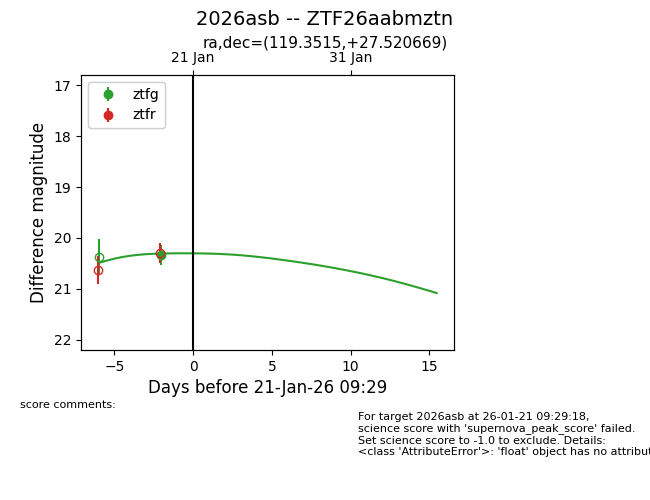
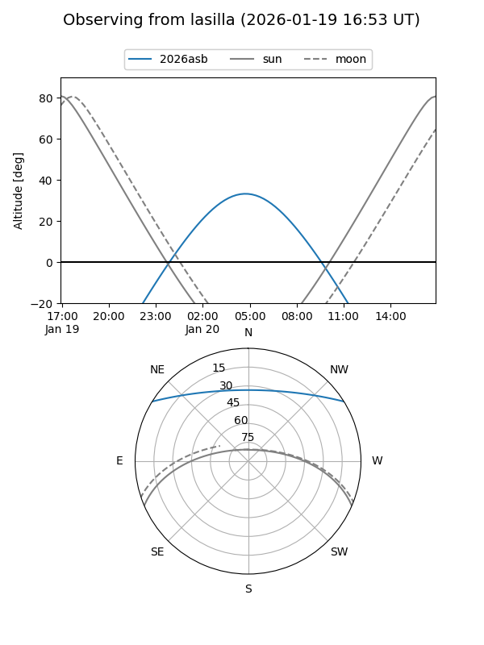
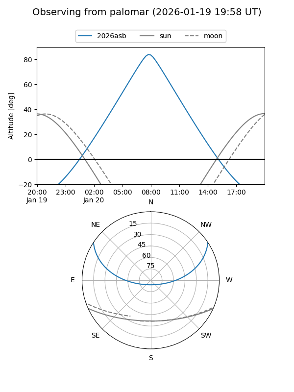
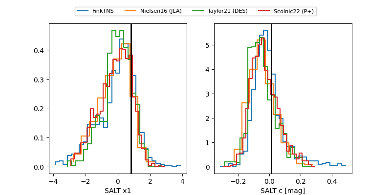

2026asb
Target 2026asb at 2026-01-19 20:06
Aliases and brokers:
FINK: link
Lasair: link
ALeRCE: link
TNS: link
YSE: link
alt names
ZTF26aabmztn (ztf,fink_ztf)
2026asb (tns,yse)
Coordinates:
equatorial (ra, dec) = 119.3515,+27.52067
equatorial (HMS+DMS) = 07:57:24.35,+27:31:14.41
galactic (l, b) = (193.7132,+25.76989)
Flags:
Photometry:
last ztfg=20.33
1 ztfg detections
Lightcurve

Visibility


Additional plots
